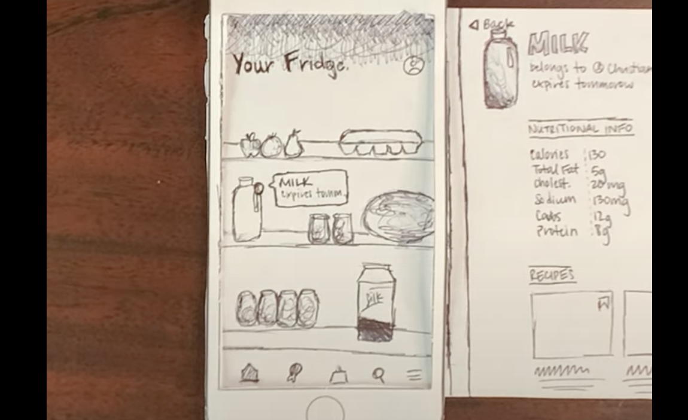

Problem Statement: FoodTrack
About 1.3 billion tons of food produced for human consumption is either lost or wasted globally. This food is then dumped into landfills, which produces methane (a greenhouse gas) that harms the environment we inhabit. Lastly, food waste is estimated to cost families up to $1,500 annually.
Affinity Diagram

In a one hour braindump, my partner and I created some groundbreaking solutions to elimate food waste through the use of up-and-coming fridge cameras and a mobile app.
Personas
Who will use FoodTrack? And more importantly, why will they use it?
Storyboards
In this scenario-making exercise, we illustrated a user's journey using the FoodTrack app.
Sketches
In efforts to design a powerful user interface, we rapidly prototyped a few sketches of different FootTrack pages.
Paper Prototype
An video demo of FoodTrack using paper.
Low-Fi Prototype

An interactive prototype of FoodTrack, showing refrigerator items, recipes, shopping lists, and profile information.